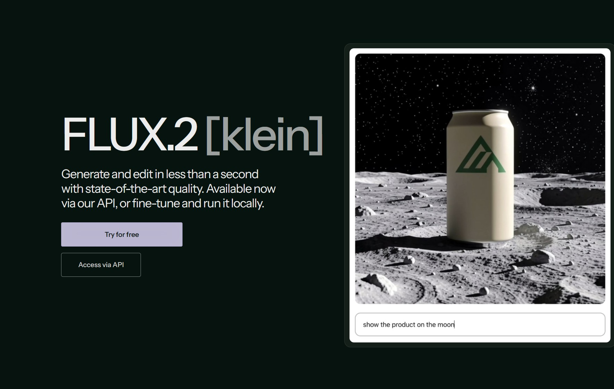

FLUX.2 [klein] Tutorial

A compact workflow for FLUX.2 [klein]
This tutorial page is a place to document a repeatable setup for FLUX.2 [klein]: starting from a clean prompt, controlling composition early, and then refining the result through selective reruns instead of constant prompt expansion.
A practical workflow usually begins with a narrow visual target, a small set of descriptive anchors, and a clear decision about what should remain stable between generations. Once the model begins producing useful structure, iteration becomes more about editing direction than about adding more words.
This page can also serve as a tutorial log: prompt fragments, settings, failures, and the final images that came out of the process.